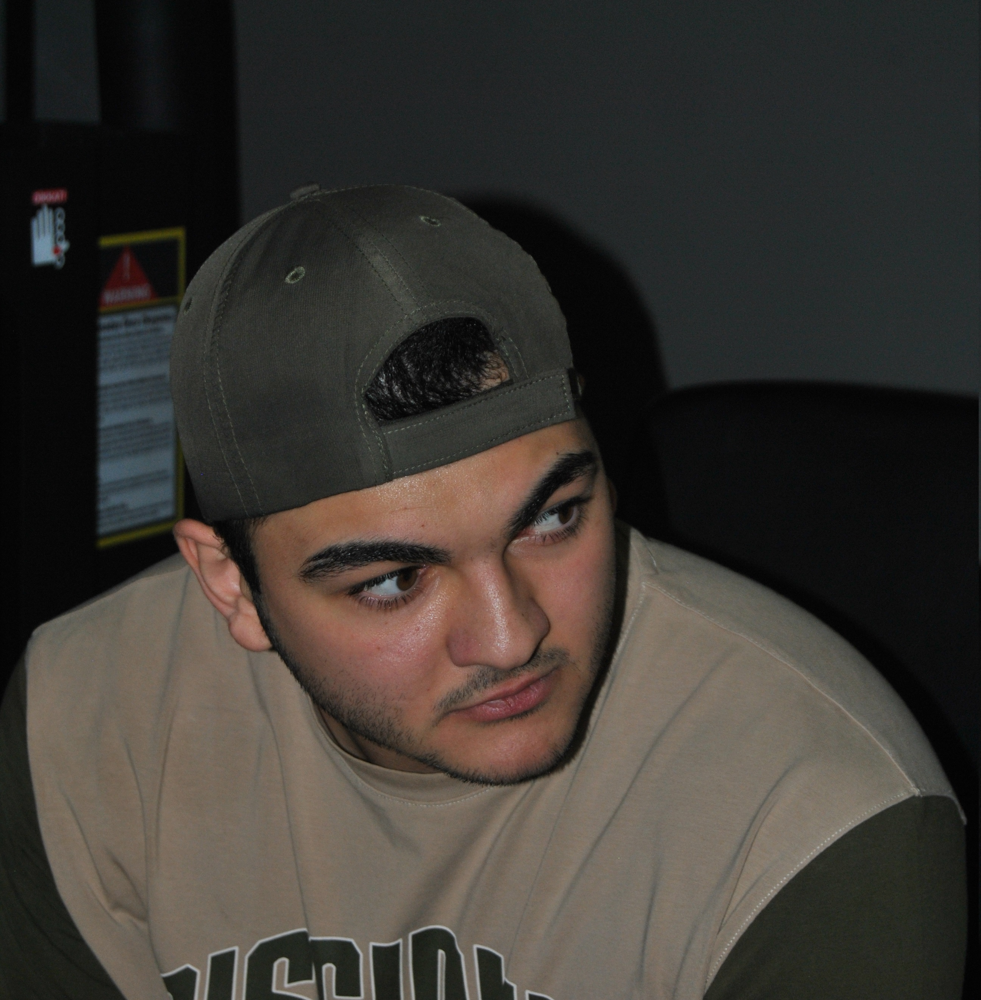

Merhaba,Ben Atilla!
Ben Atilla Atakan Özenci, 21 yaşında Uludağ Üniversitesinde Bilgisayar Programcılığı öğrencisiyim.
Hayatımda öğrenmeye ve gelişmeye dair bir tutkum var ve bu tutkuyu paylaşmak için bu siteyi oluşturdum.
Bu site, bilgi ve deneyimlerimi paylaşarak bir topluluk oluşturmak ve birlikte öğrenmek amacıyla kurdum.
Blog yazıları, makaleler, ve paylaşımlar aracılığıyla sizinle etkileşimde bulunmayı ve birbirimize ilham kaynağı olmayı umuyorum.
Eğer merak ettikleriniz veya bana ulaşmak istediğiniz bir konu varsa, lütfen iletişim sayfasından bana mesaj göndermekten çekinmeyin.